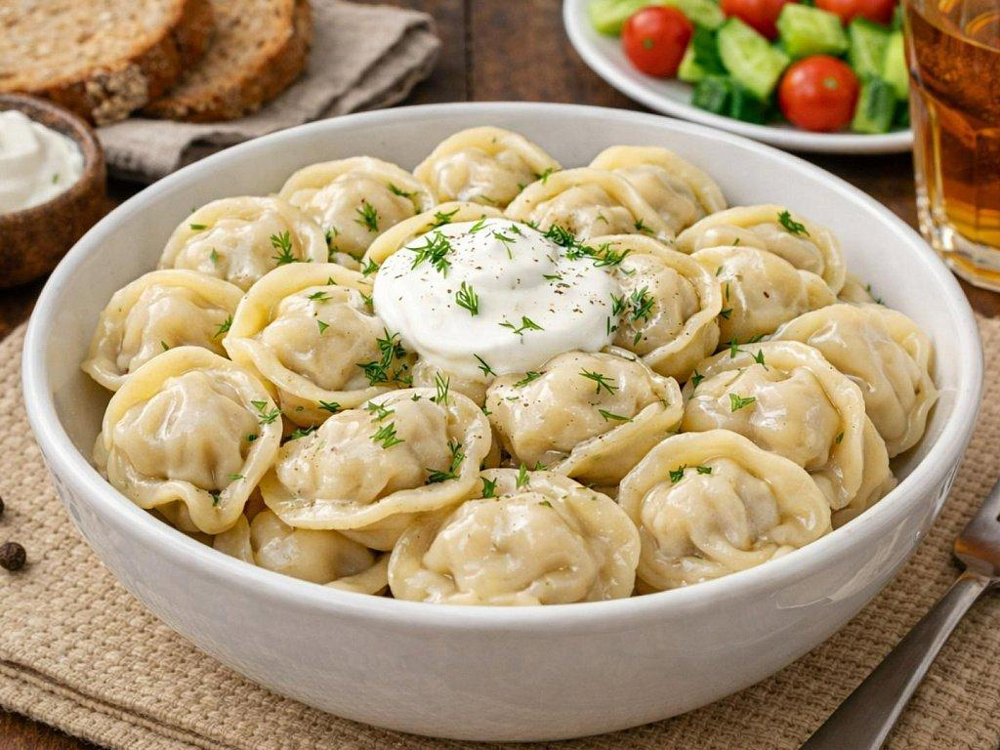
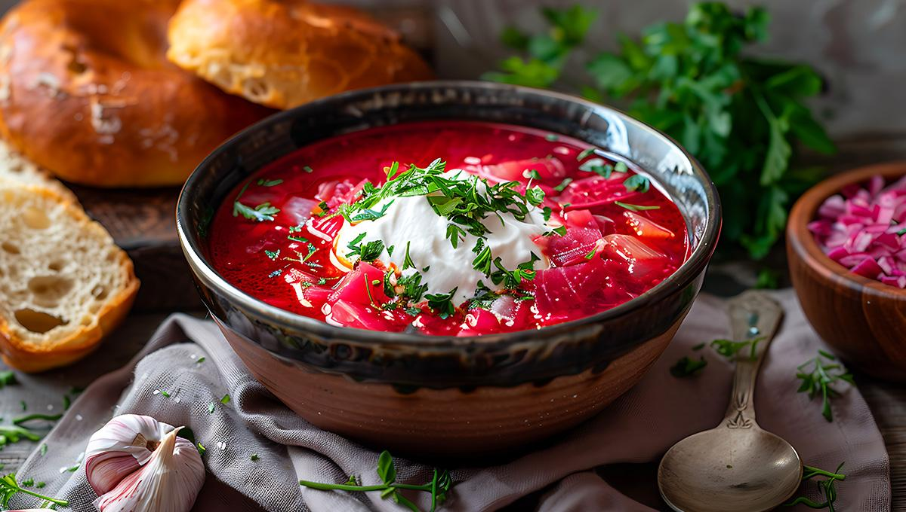
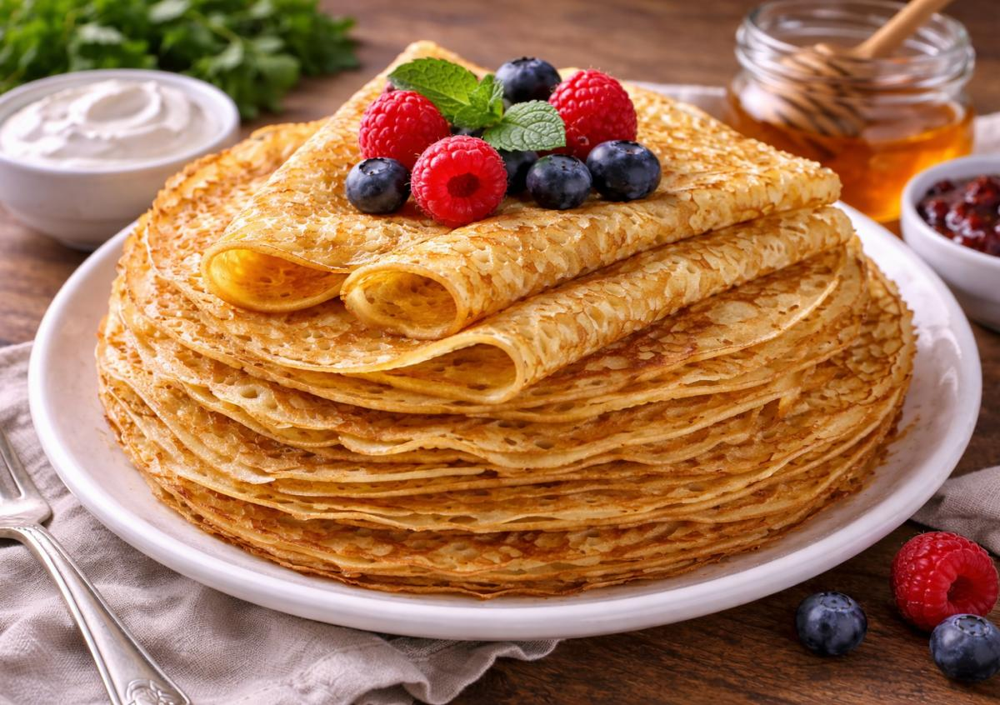

Pelmeni
Pelmeni are small dumplings filled with meat. They are usually boiled and served with sour cream.
Russia has many interesting traditions, foods and celebrations. Here are a few things that make Russian culture special.
Russian food is an important part of the culture. Some dishes have been popular for many years and are still enjoyed today.

Pelmeni are small dumplings filled with meat. They are usually boiled and served with sour cream.

Borscht is a soup made with beetroot and vegetables. It is often served with sour cream and bread.

Blini are thin pancakes that can be eaten with different toppings, such as jam, honey or sour cream.
Russia celebrates many holidays throughout the year. New Year's Eve is one of the biggest celebrations, when families gather together and exchange gifts.
Another traditional celebration is Maslenitsa, which marks the end of winter. People celebrate by eating blini and taking part in outdoor activities.
Traditional Russian food and celebrations are an important part of family life. Many traditions are passed down from one generation to another.
"Better to see once than hear a hundred times."
Watch a short video showing Russian landscapes and culture.
Have a question about Russia? Fill out the form below.
This is a practice form for the website. Messages are not sent.